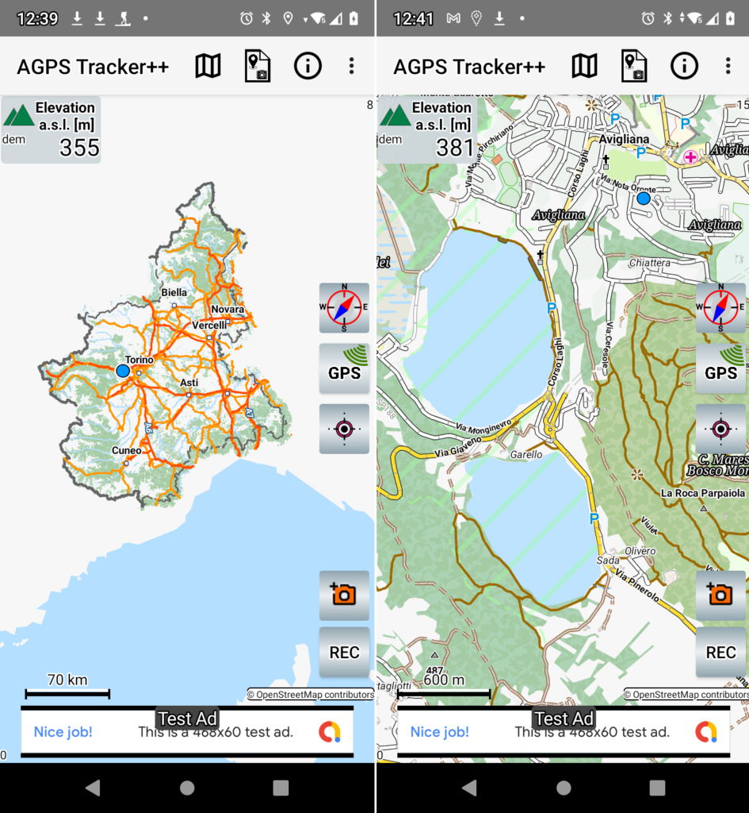
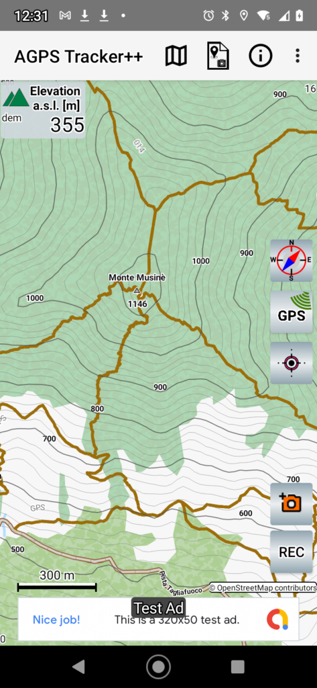
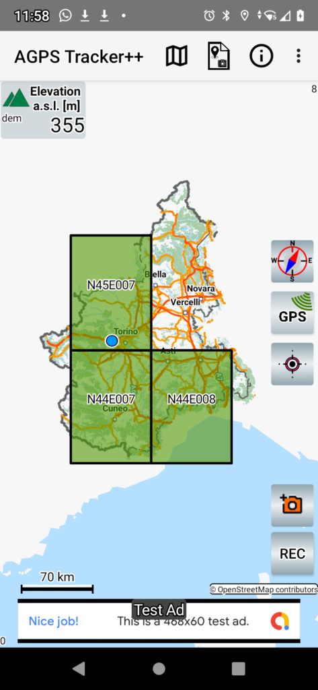

This page covers new features introduced by AGPS-TrackerOm. Common functionalities with AGPS-Tracker are explained in this Help Info link.
► Geographic Maps
► Contour lines
► Elevation
► Gpx Editor
► Technical Architecture & Rendering Pipeline
► Credits
Geographic Maps
The geographic maps used by AGPS-TrackerOm are offline, free maps created and maintained by the OpenStreetMap project (“©Openstreetmap-contributors). These maps are compressed in files with extension “.map” and may be downloaded using A-GPS TrackerOm.

The first time you run the app your archive is empty and you will be invited to select the map of your country and transfer it to your local archive.
To download other map files you can use the Map Download menu. You will get a list of candidate maps and you can navigate inside directories to find the country of your interest. When you select the map then a download will start in background. This new map becomes one of your maps in your local archive. You can see and manage your local archived maps using the Your Maps menu. Maps and DEMs are stored in an internal directory and will be deleted if you uninstall the application.
Contour Lines
Contour lines are generated automatically by A-GPS TrackerOm when you keep pressed a point of the map. The contour lines are generated starting from Digital Elevation Map (DEM) data files. The DEMs provide an accurate altitude mapping of the terrain (one point every 30m) and have been made available by NASA. They cover all land between 56 degrees south and 60 degrees north latitude as graphically shown on this DEMs Range.
{kind=link}

The first time you run the app your DEMs archive is empty. To load a DEM file you just need to keep pressed a point on the map. If you do not have a DEM for this area you will be prompted to load the file from the A-GPS TrackerOm server.
If you keep pressed a point on the map and you have already downloaded the DEM for this area, then you will see the contour lines created by A-GPS TrackerOm around the touched area.
A DEM file name identifies the geographical coordinates of the DEM area and has extension “.hgt”. For instance the file N44E008.hgt identifies a DEM covering the area with latitude North from 44 to 45 degrees and latitude East from 8 to 9 degrees. You can graphically see the distribution and coverage of DEMs on the map using the button DEMs Domains.

Elevation
The elevation is the less precise of the data provided by GPS, it may be subject to unexpected variations. DEMs give an alternative and more stable way to calculate elevation from the knowledge of the geographical position.
AGPS-TrackerOm by default will work in an Auto mode: i.e. if there is a DEM available for this area then the Elevation is calculated from DEMs data interpolation. Otherwise the user has the choice (in the Settings) to use either GPS or DEM or both.
The GPX files will always contain GPS elevation data.
GPX Editing
A GPX track, already created in your archive, can be loaded and modified in the following ways:
- Merge two tracks. The first track is simply loaded, a further one may be added.
- Modify or Delete a Point Of Interest (POI). Select a POI (keep pressed it) to Delete it or Modify POI name and description.
- Add a new POI either assigned to a point on the MAP or to a point on the track.
- Save the resulting track to a new GPX file.
Credits
This app is using some Open Source resources of great value:
- Geographic maps from OpenStreetMaps(“© OpenStreetMap contributors”. ) , under this license,
- Digital Elevation Maps, thanks to NASA. This data has been generated by the Shuttle Radar Topography Mission and then elaborated and improved with the results of other missions. SRTM Data is available at the US Geological Survey’s EROS Data Center.
- Mapsforge API at https://github.com/mapsforge/mapsforge
- Elevate map theme by Tobias Kühn, http://www.openandromaps.org/en/legend/elevate-mountain-hike-theme“
Technical Architecture & Rendering Pipeline
For developers and contributors, here is how the offline map vector rendering and caching architecture works inside A-GPS Tracker++:
Core Pipeline Components:
- RotateView: Hosts the
MapViewto enable real-time map orientation heading and compass synchronization without triggering expensive full-canvas redraws. - Map Controller (
m2.java): Detects active location, queries local map storage, configures tile cache capacities, and assigns map layers. - TileRendererLayer (
x2.java): Handles viewport requests, tile coordinate calculations, label placement caching, and dispatching to worker threads. - MapWorkerPool & Multi-threading: Utilizes adaptive multi-threading based on available CPU cores to decode Mapsforge binary vector tiles into GPU-accelerated bitmaps.
Pending enhancements to map loading (such as viewport-intersection bounding boxes and dynamic zoom clamping) are tracked in GitHub Issue #8.